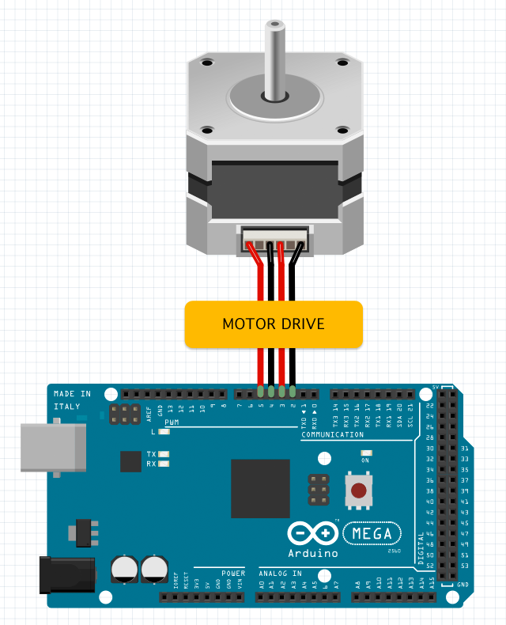

TAKE STEPS:
ROTATE:
SET SPEED:
STEP TO:

var stepper1 = new Stepper();
// set up a stepper wired with 4 pins (pin 2,3,4,5) on unit 1
stepper1.setup(1, 2, 3, 4, 5);
// set speed
stepper1.setSpeed(800); // 800 steps per second
// rotate by steps
stepper1.step(100); // take +100 steps
stepper1.step(-100); // take -100 steps
// step to a specified position
stepper1.goto(1000); // go to position +1000
stepper1.goto(-1000); // to to position -1000
// stop
stepper1.stop();
// get current stepper position
stepper1.whenGetPosition = function(position) {
document.getElementById("status").innerHTML = "present stepper position is " + position;
};
stepper1.getPosition();
// set current stepper position as a specific value
stepper1.setPosition(0); // set zero position
When the motor is running, the value of the stepper position will be updated by the steps rotated. The initialized position is 0, the value will increase after rotating forward, or decrease after rotating reverse. With a position counter maintained in the system, the allowed position value can range between -16777215 (-0xffffff) and 16777215 (0xffffff).
Stepper
setup(unit, pin1, pin2, pin3, pin4)
initialize a stepper object with four specified pins (pin1, pin2, pin3, pin4) on a specified unit.
return value: true if successful, otherwise false.
step(steps)
rotate the motor by the specified steps.
return value: true if successful, otherwise false.
goto(position)
set a number to the parameter as the target stepper position. The motor will rotate to the specified position.
return value: true if successful, otherwise false.
stop()
stop to rotate the motor.
return value: true if successful, otherwise false.
setSpeed(speed)
set a number of steps per second to the parameter for changing the motor rotating speed, return value: true if successful, otherwise false.
getSpeed()
request to get the current speed value of the stepper, an event callback whenGetSpeed() will be received later.
return value: the speed value, a number of steps per second.
setPosition(position)
set a number to the parameter as the current stepper position.
normally, the function is used for original zero position synchronizing in the motion control.
return value: true if successful, otherwise false.
getPosition()
request to get the current position of the stepper, an event callback whenGetPosition() will be received later.
return value: the stepper position value.
Return Value Note:
The function will return a value when your h5control program uses waitRsp mode, but no return value when uses nowaitRsp mode.
whenSetup(done)
receive the callback when setup done. parameter done is true if successful or false otherwise.
whenStep(steps)
receive the callback when the motor rotated by the specified steps.
whenGoto(position)
receive the callback when the motor is going to the specified target position.
whenStop()
receive the callback when stopped to rotate the motor.
whenSetSpeed(speed)
receive the callback when the stepper speed is set.
whenGetSpeed(speed)
receive the callback to to get the current speed value of the stepper after called function getSpeed().
whenSetPosition(position)
receive the callback when the current stepper position is set.
whenGetPosition(position)
receive the callback to to get the current stepper position after called function getPosition().